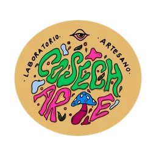
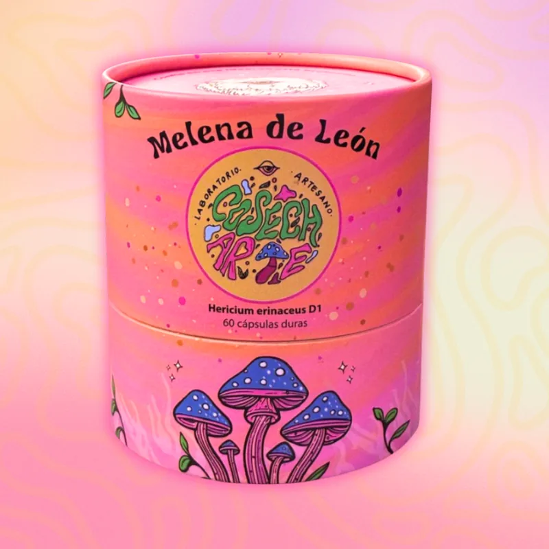
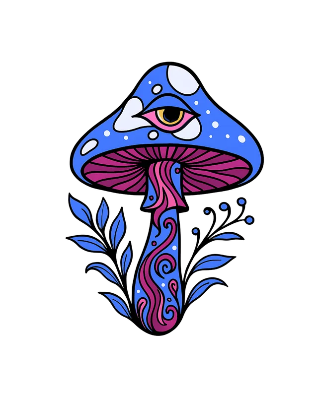
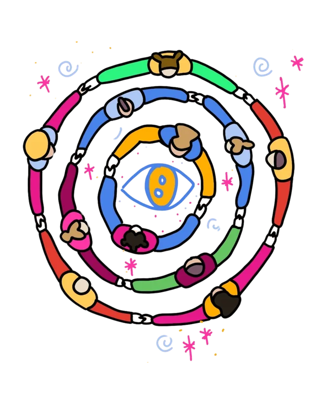
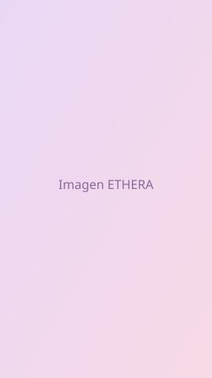
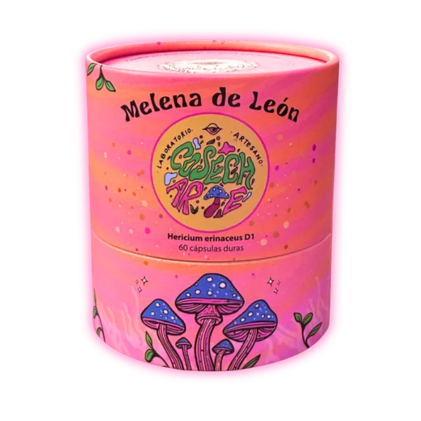
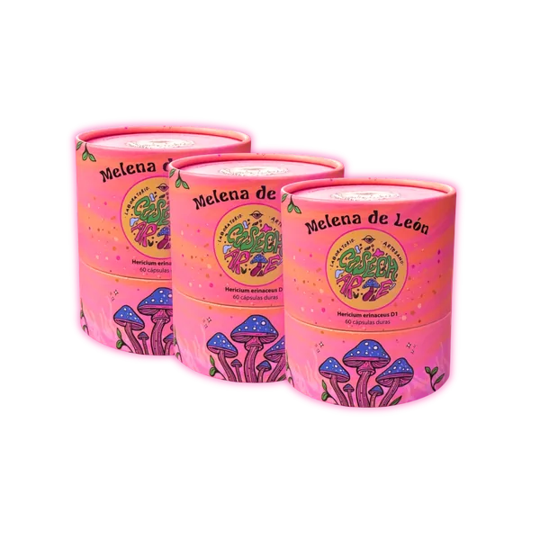
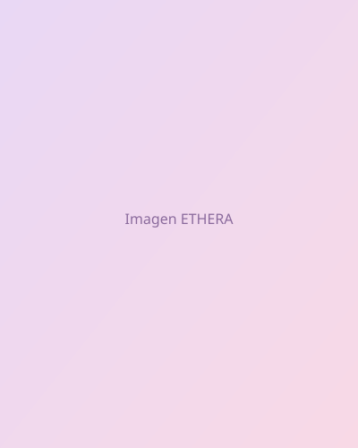
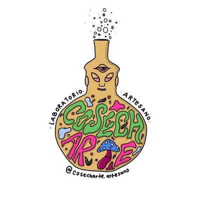

Laboratorio Artesano ColombianoDesbloquea tu máximo potencial cognitivo
Con Melena de León fermentada, el suplemento natural que potencia tu enfoque, memoria y claridad mental desde la primera semana.
+2,500 personas
ya transformaron su mente

Por frasco
60 cápsulas
450mg cada una

El poder de la
Melena de León
Un hongo funcional reverenciado durante milenios por sus extraordinarias propiedades nootrópicas y su capacidad de regeneración neuronal.

Claridad Mental
Potencia tu enfoque, concentración y capacidad cognitiva. Ideal para mentes creativas y analíticas.

Memoria Mejorada
Estimula la producción de NGF, el factor de crecimiento nervioso que apoya la memoria y el aprendizaje.

Energía Creativa
Vitalidad sostenida durante todo el día sin los efectos secundarios del café o estimulantes.

Equilibrio Emocional
Reduce la ansiedad y el estrés, promoviendo un estado de calma y presencia interior.

Neurogénesis
Estimula la creación de nuevas neuronas y conexiones neuronales para un cerebro más adaptable y resiliente.
Medicina Ancestral
Sabiduría milenaria de los hongos funcionales usados por culturas orientales durante siglos.
Cómo funciona
4 pasos para entender por qué la Melena de León fermentada transforma tu mente.
Fermentación bioactiva
La Melena de León fermentada libera hericenones y erinacinas, compuestos clave que el cuerpo absorbe con mayor facilidad.
Cruzan la barrera cerebral
Estos compuestos atraviesan la barrera hematoencefálica y estimulan la producción del Factor de Crecimiento Nervioso (NGF).
Neurogénesis activa
El NGF favorece la regeneración y conexión de neuronas, fortaleciendo tu sistema nervioso desde adentro.
Resultados sostenidos
Mayor enfoque, memoria y creatividad. Los primeros cambios se sienten desde la primera semana de uso constante.
De Laboratorio a Ecosistema
ETHERA nació como una semilla sembrada en el corazón: un llamado desde la tierra, el alma y la consciencia. Un impulso que brotó desde las raíces más profundas para florecer en forma de hongos, arte, comunidad y propósito.
Hoy, ETHERA ya no es solo un laboratorio. Es un ecosistema para creadores conscientes, un entorno donde la medicina ancestral, la biotecnología y la expresión creativa conviven, se nutren y se expanden.
"Aquí no solo florece el micelio, florece tu camino."




Manifestación del Alma
La palabra "psicodelia" proviene del griego: Psico = alma y Delia = manifestar. Literalmente significa "manifestación del alma".
Creemos que todos somos creadores. Crear es emprender desde el alma, acompañar un proceso terapéutico, sostener una ceremonia, escribir un manifiesto, sembrar una empresa, canalizar un propósito.
La creatividad, para nosotros, es medicina. Y los hongos son el canal para abrir la mente, el alma y la imaginación a nuevas formas de ser, sanar y existir.
Voces de nuestra
Comunidad
Historias reales de transformación y consciencia expandida

Clientes Felices
Calificación Promedio
Satisfacción
Invierte en tu Mente
Cultivo biotecnológico, medicina ancestral y acompañamiento consciente. Elige el plan que resuene con tu proceso.

1 Mes
Prueba el poder
Envío 3-5 días hábiles (costo adicional)
-
60 cápsulas de Melena de León
-
Guía de uso incluida
-
Soporte por WhatsApp
-
Cultivo biotecnológico
- 🌱 Cápsulas veganas
- 🇨🇴 Envase biodegradable hecho en Colombia

Ritual 90 días
3 cajas · Compromiso consciente
Envío gratis (3-5 días hábiles)
-
180 cápsulas de Melena de León
-
Guía de uso incluida
-
Soporte prioritario por WhatsApp
-
Cultivo biotecnológico
- 🚚 Envío GRATIS (3-5 días hábiles)
- 🔮 Acceso a comunidad privada
- 🎟️ Descuento en eventos y talleres
- ✨ Garantía 30 días: si no es para ti, te devolvemos tu dinero

Ritual 180 días
6 cajas · Transformación total
Envío gratis (3-5 días hábiles)
-
360 cápsulas de Melena de León
-
Guía de uso incluida
-
Soporte VIP por WhatsApp
-
Cultivo biotecnológico
- 🚚 Envío GRATIS (3-5 días hábiles)
- 🔮 Acceso a comunidad privada
- 🎟️ Descuento en eventos y talleres
- 🧘 Acompañamiento y asesoría
- ✨ Garantía 30 días: si no es para ti, te devolvemos tu dinero
Preguntas Frecuentes
Todo lo que necesitas saber sobre Melena de León
Apoya la claridad mental, el enfoque y potencia la creatividad. Además aumenta el bienestar general gracias a sus compuestos bioactivos naturales.
La fermentación ayuda a predigerir y transformar compuestos, lo que mejora significativamente su absorción y potencia, además suaviza la digestión.
Mayor enfoque, memoria más clara, creatividad fluida y apoyo al sistema nervioso.
Los primeros cambios perceptuales sutiles pueden notarse entre 5 y 15 días de uso continuo. Para cambios notorios y sostenidos, se recomienda un mínimo de 3 meses de uso constante.
Consulta primero con tu médico si tomas medicamentos o tienes condiciones específicas.
Tomar 2 cápsulas al día es lo recomendado.
Ninguno. Es un hongo funcional, no genera adicción.
Proviene de cultivos controlados y sostenibles en Colombia, libres de pesticidas y agroquímicos.
No jejeje. Este no, puedes tomarlas tranquilamente.
La evidencia muestra que el cuerpo necesita al menos 3 meses para empezar a revelar cambios perceptuales claros y notorios. Cuando lo tomas durante 6-8 meses, los efectos positivos se sienten más profundos y se sostienen en el tiempo.

¿Quiénes hay detrás
de esta marca?
Somos Marce y Tin, caminantes del arte, la naturaleza y la conciencia. Dos almas que encontraron en el arte y en los hongos un lenguaje de transformación.
ETHERA es un puente entre lo natural y lo humano, entre la ciencia y la ancestralidad.
Cada medicina que compartimos es una ofrenda, una semilla para la creatividad, la claridad y el despertar colectivo.

¿Listo para
despertar tu mente?
Aquí no solo vendemos, sembramos revolución interna. La medicina se transforma en arte, y el arte en vida.